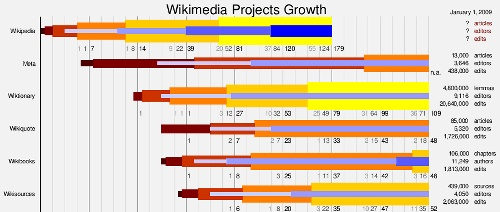
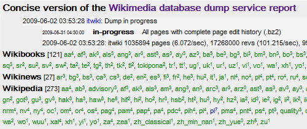
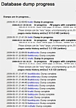
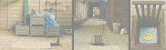
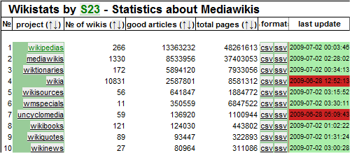
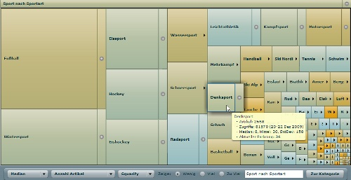
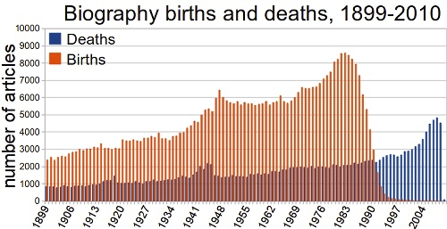
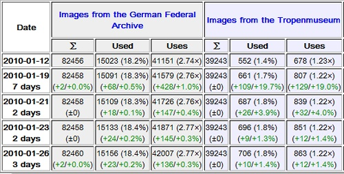
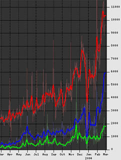
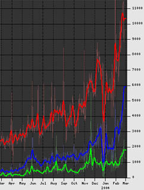

| |
Wikistats: Wikimedia Statistics |
Monthly Report Card
A compact overview over recent trends. | |
Statistics per Wikimedia project
Detailed trends for each project.
|
| Erik Zachte / ezachte@# (no spam: # = wikimedia.org) / Documentation, scripts and data / Blog on Wikistats |
Creation History - Recent Months - Current Status - Dumps - Categories - Wikibooks

(click to zoom in)
These animations are pure javascript (html 5, canvas object) and require a modern browser
For other browsers there is a Flash recording
Wikibooks, Wikinews, Wikipedia, Wikiquote, Wikisource, Wikiversity, Wikispecial, Wiktionary
Wikibooks,
Wikinews,
Wikipedia,
Wikiquote,
Wikisource,
Wikiversity,
Wikispecial,
Wiktionary
Also Summary for all projects
Wikipedia Page Views / Page Edits per Country - Overview
Wikipedia Page Views / Page Edits per Country - Breakdown
Wikipedia Page Views / Page Edits per Country - Trends
Wikipedia Page Views / Page Edits per Language - Breakdown
Read more at my blog post Wikimedia Page Views
This analysis is based on a 1:1000 sampled server log (squids) ⇒ all counts x 1000.
How many files are requested each day? Breakdown by file type and target (sub)project
Where do those requests originate? Breakdown by file category and origin
Which HTTP requests are issued? Breakdown by type and results
Which scripts are invoked? Breakdown by type (css, javascript, php), name and parameters
Which skin files are downloaded and how often?
Which crawlers access our servers? Breakdown by host, file types requested, agent string
Which operating systems do our clients use? Breakdown by platform, mobile or not, release
Which browsers are how popular? Breakdown by brand, revision level, mobile or not
Breakdown of all traffic that Google send us: directly (crawlers) and indirectly (search results)
Tables show edits and revert counts for registered and anonymous users, and bots
Charts show edit trends per language project, for same three classes of editors
plus revert trend for all classes combined
Tables and charts listed here link to more detailed pages, with extensive edit and
revert stats per language project, like this one for the English Wikipedia
Wikipedia
Table &
Charts
/ Wikibooks
Table &
Charts
/ Wikinews
Table &
Charts
Wikiquote
Table &
Charts
/ Wikisource
Table &
Charts
/ Wikiversity
Table &
Charts
Wiktionary
Table &
Charts
/ Other projects
Table &
Charts
Wikibooks, Wikinews, Wikipedia, Wikiquote, Wikisource, Wikiversity, Wikispecial, Wiktionary
Which Wikimedia mailing lists are frequently updated?
Which Wikimedia editors are most active and where ?
Wikibooks, Wikinews, Wikipedia, Wikiquote, Wikisource, Wikiversity, Wikispecial, Wiktionary
Wikibooks, Wikinews, Wikipedia, Wikiquote, Wikisource, Wikiversity, Wikispecial, Wiktionary
See also: Data gathering progress
| Concise report  |
Original report  |
Rankings (by size, edits, authors and chapter counts), Tables of Content, Chapter Sizes
Wikibooks, Wikinews, Wikipedia, Wikiquote, Wikisource, Wikiversity, Wikispecial, Wiktionary
Wikibooks, Wikinews, Wikipedia, Wikiquote, Wikisource, Wikiversity, Wikispecial, Wiktionary
More at my blog post Sarah Palin
See also blog post US presidential election 2008
More at my blog post H1N1 Flu or New Flu or …
|  |
Author:Erik Zachte (Web site) Mail:ezachte@### (no spam: ### = wikimedia.org) For documentation, scripts and data see About page. ⇐ See also Blog on Wikimedia Statistics |
Many authors

Screenshot edited for compact display
Basic stats on lots of Mediawiki wikis, very up to date
Author User:Mutante
Article views per day, week, month or year, based on dammit.lt files
Author Pete Skomoroch (Data Wrangling)
Article views per month, based on dammit.lt files
Author Melancholie
Article views per month or year, based on dammit.lt files
Author Henrik
Note: it is possible to request data in json format (structured data for use in other tools,
each month is represented by an array of 32 values starting with a 0)
For yearly stats remove month number manually from url.
Article views for any period since 2007 per month, based on dammit.lt files
Author user:Emw
Comparing article views for the last 30, 60 or 90 days, based on dammit.lt files
Author Small Batch Inc
Author Craig Wood
Many charts: Edit rate - Edits per article - Revert rate - New articles,
new users, new administrators - Uploads and admin actions
Author Dragons flight
Author WikiChecker.com
Author WMF staff member (?)
Author Stu
Author Alexa
Author Google
Author Many wikipedians
Author Many wikipedians
Authors Bongwon Suh and Ed Chi
|
Requests hourly - daily - weekly - monthly - yearly combi (new layout) |
Traffic hourly - daily - weekly - monthly - yearly |
Author Mark Bergsma & Leon Weber

Interactive treemap visualizes breakdown of German Wikipedia by category.
Colors are based on number of articles or page views per category.
Author Björn Höhrmann

How are Wikipedia biography articles distributed in the 20th century?
Author Carcharoth

For donated images archives:
Author Magnus Manske (see also other toys'n'tools by Magnus)
This table shows the number of pages that have been proofread using the ProofreadPage
extension, at various Wikisource subdomains. It is updated daily.
Author ThomasV
Geotagged articles are mapped to country, land mass (shown) or population size.
Geotagged articles in United Kingdom mapped to district, square kilometer or person (shown).
Author Mark Graham
Anonymous edits per day/hour for current month
Author user Krinkle (see also many other tools by Krinkle)
SVN edits by category
Author user Krinkle (see also many other tools by Krinkle)
Enough tables, bar charts and plots to keep you busy for a while, available in:
Asturianu |
български |
Brezhoneg |
Català |
čeština |
Dansk |
Deutsch |
English |
Esperanto
Español |
Français |
עברית |
Magyar |
Italiano |
日本語
Nederlands |
Nynorsk |
Polski
Português |
Română |
Русский |
Slovenščina |
Svenska |
Walon |
中文
Dumps
All 750+ Wikimedia wikis are exported on a regular basis to so called dump files.
The Wikicounts scripts process these dumps and generate a lot of intermediate csv files.
The Wikireports scripts read from these csv files and generate reports in many languages.
The csv files are also available for download, see below.
Rudimentary documentation: Intro + How to run WikiStats on your own Mediawiki site
Log files
All requests to Wikimedia servers are logged.
Mid 2009: 4,000 article requests per second, 70,000 file requests per second all in all.
From these logs page view counts are distilled.
Documentation: Traffic Reports
Raw data in csv format (can be imported in spreadsheet):
Wikibooks,
Wikinews,
Wikipedia,
Wikiquote,
Wikisource,
Wikiversity,
Wikispecial,
Wiktionary
Perl scripts: zip file / SVN (folders 'dump' and 'lib')

My first edit on the English Wikipedia (October 2002) was on statistics, namely the importance
of Florence Nightingale
for the development of epidemiological statistics, and particularly her
usage of the polar diagram.
|
Author:Erik Zachte (Web site) Mail:ezachte@### (no spam: ### = wikimedia.org) For documentation, scripts and data see About page. ⇐ See also Blog on Wikimedia Statistics |
First time users please see core concepts below.
The monthly Report Card offers a compact overview over recent trends.
All charts cover exactly one year. The Report Card comes in three layouts:
| Wikipedia | Wikibooks | Wikinews | Wikiquote | ||||||||
| Wikisource | Wikiversity | Wiktionary |
|
Wikispecial |
The links below are examples only, and lead you to the German Wikipedia.
Tip 1: Choose site map above for full list of all languages
Tip 2: Switch between tables and charts, between languages or comparison reports with navigation bar, see below
Tables for each language project plus summary for all projects:
Language projects are sorted by popularity (views per hour)
Charts for each language project plus summary for all projects:
Tables plus Charts for comparisons between language projects:
See section Special Reports for other tables and charts listed on site maps
Defined as registered users who edited 10 or more times since they arrived,
and thus showed at least a modicum of involvement at one point in time.
This number can only grow. The number is very inclusive. Compare (very) active users below.
|
Author:Erik Zachte (Web site) Mail:ezachte@### (no spam: ### = wikimedia.org) For documentation, scripts and data see About page. ⇐ See also Blog on Wikimedia Statistics |
 
{kind=link}
{kind=link}
{kind=link}
{kind=link}
{kind=link}
{kind=link}
{kind=link}
{kind=link}
{kind=link}
{kind=link}
{kind=link}
{kind=link}
{kind=link}
{kind=link}
{kind=link}